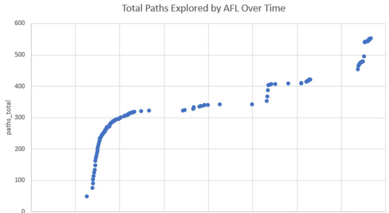

Homework 3: Fuzzing with AFL Due Wednesday, February 14, 2024, 11:59PM AoE
In this assignment you will use tools to automatically create a high-coverage test suite for a program.
You may work with a partner for this assignment.
Start Early
Professors often exhort students to start assignments early. Many students wait until the night before and then complete the assignments anyway. Students thus learn to ignore “start early” suggestions. This is not that sort of suggestion.
Warning: the tools take hours!
The tools you must use for this assignment literally take multiple hours to run. Some students reported that it took over 14 hours to run! (However, others were able to finish in about five minutes. Regardless of when you finish, everything is fine.) Even if you are fast and can finish your work at the last minute, the tools are not and can not. On a high-powered multi-core rack-mounted RAID-storage test machine it took 6.3 hours to run the AFL tool. However, as soon as you get enough data (see below) you can stop early (just press Ctrl-C).
However, once running, the tools are completely automated. Thus, you can start them running overnight, sleep and ignore them, and wake up to results. This means that even though the assignment may not take hours of your active personal attention, you must start it days before the due date to be able to complete it in time.
Installing, Compiling and Running Legacy Code
It is your responsibility to download, compile, and run the subject programs in this assignment (and the other assignments in this course). Getting the code to work is part of the assignment. You can post on the forum for help and compare notes bemoaning various architectures (e.g., windows vs. mac vs. linux, etc.). Ultimately, however, it is your responsibility to read the documentation for these programs and utilities and use some elbow grease to make them work.
Subject Program and Tool: PNG Graphics (C) + American Fuzzy Lop
The first subject program is libpng’s pngtest program, seen earlier in Homework 2. This reuse has two advantages. First, since you are already familiar with the program, it should not take long to get started. Second, you will be able to compare the test cases produced by the black-box tool to the white-box test cases you made manually. (You’ll have to recompile it with special flags, but it’s the same source code.)
The associated test input generation tool is American fuzzy lop (hereafter “AFL”), version 2.52b. A mirror copy of the AFL tarball is here, but you should visit the project webpage for documentation. As the (punny? bunny?) name suggests, it is a fuzz testing tool.
You will use AFL to create a test suite of .png images to exercise the pngtest program, starting from all of the .png images provided with the original tarball. Note that you can terminate AFL as soon as you reach 510 paths_total (also called total paths in the GUI)— AFL does not stop on its own (instead, press Ctrl-C to stop it).
AFL installation and use details
AFL claims that one of its key advantages is ease of use. We will consider four separate high-level steps in this dynamic analysis.
Step 1: Compile AFL
Follow along with AFL’s quick start guide. Extract the AFL tarball (to its own directory) and run “make”.
Note that this results in files such as afl-gcc and afl-fuzz, which we will use in subsequent steps.
Step 2: ‘Instrument’ libpng
Do not re-use your HW2 copy of libpng. (It is possible, but leads to much confusion.) Instead, download a fresh copy of the reference implementation (version 1.6.40) here and place it in a new folder for Homework 3 (e.g., HW3).
Change to that libpng-1.6.40 directory and re-configure libpng with a special configure line like this:
$ CC=/REPLACE/THIS/TEXT/WITH/YOUR/PARTICULAR/PATH/TO/afl-gcc_(don't_just_copy_this_in_unchanged) ./configure --disable-shared CFLAGS="-static"
$ make
The “CC” bit will look something like (but maybe different for you) CC=/home/ubuntu/cs684/hw3/afl-2.52b/afl-gcc — note that there is no trailing slash. If you see configure: error: C compiler cannot create executables, double-check your spelling here. Also, folder names with spaces (like “CS 684/HW 3”) will not work: rename the folder to remove the spaces.
Multiple students have reported that WSL does not work with AFL and that they needed to move to an Ubuntu virtual machine instead (as per HW0). See the FAQ below.
Note that you are not using “coverage” or gcov for this part of the homework assignment. We only want AFL instrumentation for now.
Step 3 — Choosing seed images
AFL uses initial inputs you provide and mutates them to find new inputs that cover additional parts of the program. (For more information, see its documentation.) The initial inputs you provide are called seed inputs. Since we are testing libpng, the seed inputs are “images”.
Because AFL repeatedly processes these seed files, if you include very large or very many seed files, AFL will take too long to run.
Make a new subdirectory to hold your seed files. This subdirectory may be called testcase_dir in the documentation, but you can name it whatever you want. Most students put their 50 manual test cases from HW2 there, but if your HW2 images are large, consider only including the smaller ones. (You’ll want to know the total coverage of the seed images you start with for the HW3 written report, but since you’ve left your HW2 installation alone, you can compute that using the same method you used in HW2. Delete the old coverage information in your HW2 folder, run pngtest on all of your seed images, and run gcov to list the total coverage.)
Step 4 — AFL generates inputs for libpng
Now it is time to run AFL on libpng.
$ sudo su
# echo core > /proc/sys/kernel/core_pattern
# exit
$ /REPLACE/THIS/TEXT/WITH/YOUR/path/to/afl-fuzz -i testcase_dir -o findings_dir -- /path/to/pngtest_(not_.c_nor_.png_but_the_executable_you_built) @@
(In this command, the /path/to/pngtest_(not_.c_nor_.png_but_the_executable_you_built) part is the absolute path to the pngtest executable that is created after running make in the libpng directory for HW3 in Step 2 above. For example, it might potentially look something like /home/ubuntu/HW3/libpng-1.6.40/pngtest but might be slightly different for you.)
Do double-check the end of the previous line for @@. It is required, it is not a typo, and if you did not type it in (to tell AFL where its randomly-created arguments to pngtest go) you are likely to “get stuck” when enumerating paths and tests (see FAQ below).
Note that findings_dir is a new folder you make up: afl-fuzz will put its results there (in a queue subfolder). The results will be “images” (both good and bad) produced by AFL to get high coverage. The results will all have ugly names, but they will be the output of AFL.
Note that you must stop afl-fuzz yourself (just press Ctrl-C), otherwise it will run forever — it does not stop on its own. Read the Report instructions below for information on the stopping condition and knowing “when you are done”.
Note also that you can resume afl-fuzz if it is interrupted or stopped in the middle (you don’t “lose your work”). When you try to re-run it, it will give you a helpful message like:
To resume the old session, put '-' as the input directory in the command
line ('-i -') and try again.
Just follow its directions. Warning: when you resume AFL it will overwrite your findings/plot_data file (which you need for the final report), so be sure to save a copy of that somewhere before resuming.
Note that afl-fuzz may abort the first few times you run it and ask you to change some system settings (e.g., echo core | sudo tee /proc/sys/kernel/core_pattern, echo core >/proc/sys/kernel/core_pattern etc.). For example, on Ubuntu systems it often asks twice. Just become root and execute the commands. Note that sudo may not work for some of the commands (e.g., sudo echo core >/proc/sys/kernel/core_pattern will fail because bash will do the > redirection before running sudo so you will not yet have permissions, etc.) — so just become root (e.g., run sudo sh) and then execute the commands in a root shell. If you are getting core_pattern: Permission denied errors, make sure you become root first before executing the commands:
sudo su
echo core > /proc/sys/kernel/core_pattern
exit
The produced test cases are in the findings_dir/queue/ directory. They may not have the .png extension (instead, they might have names like 000154,sr...pos/36,+cov), but you can rename them if you like. Note that AFL can and will produce “invalid” PNG files to test error handling code; such “invalid” PNG files will appear to produce errors or otherwise not be viewable. This is normal and expected.
At some point, many students are tempted to ask a question like “Is it normal that my XYZ Machine got to ABC paths in PQR minutes?” We acknowledge that students are often anxious about this assignment. For many students, this may be a first experience using an off-the-shelf tool with an unknown running time. As a software engineer, you will need to be comfortable with scheduling and risk (especially with respect to schedules). Part of this homework is designed to give you a feeling for what it is like to employ a software engineering process in the face of uncertainty. We want to give you experience with this in a safe (classroom) setting, rather than having your first experience with this be on the job. Regretfully, there is no way for us to answer questions about whether or not it is normal that your particular machine took some particular time. I know students really wish we could reduce their anxiety or uncertainty about this process. In practice, the running time of AFL depends on many factors, including the side and number of the seed images, the speed of your CPU and disk, the load on the machine, and so on. There is no secret formula for how long it is supposed to take that we are hiding from you but will reveal if you ask such a question directly. Instead, living with this uncertainty — feeling uncomfortable about it, and having to complete the assignment anyway — is a key point of the assignment.
Help! I can't open AFL's output!
You will almost certainly find that AFL’s output queue folder does not contain files with the .png extension. In addition, you will almost certainly find that most of the files produced by AFL are “invalid” PNG files that cause program executions to cover error cases (e.g., libpng read error).
This is normal.
Double-check all of the instructions here, and the explanations in the course lectures for how these tools work: there’s no need to panic. In addition, you might try alternate image viewers (rather than just the default one). For example, multiple students have reported that uploading apparently-invalid images to GitHub (no, really) works well for viewing them.
While AFL is running, you can read the technical whitepaper to learn about how it works and compare the techniques it uses to the basic theory discussed in class.
Help! It looks like AFL has stalled! Is that normal? I am worried.
Students are often worried that AFL appears to have stalled. Such students often wonder things like: “Should I restart AFL? Or is everything fine? Have I done something wrong? Or should I just leave it be?”
Making scheduling decisions in the face of uncertainty (i.e., unknown information) is a major theme in the course. It is explicitly part of the assignment.
Once a student has AFL running correctly (e.g., following the instructions above, not forgetting the @@, etc.) and has seen AFL produce some new images (e.g., by inspecting the output directory from another shell terminal window), that student should feel confident allowing AFL to continue to run. It is very common for AFL to “plateau” or “get stuck” for a while and recover naturally.
To reassure students, below is a cropped example plot from a previous semester (with the x-axis label intentionally removed). (If your plot does not have this shape, you are still fine.) Note how there are multiple periods where no new progress appears to be made.

Students who find that AFL is taking too long also have the option of restarting with a smaller set of seed images, all of which are quite small. The running time of AFL strongly depends on the number and size of your seed images.
Students are often tempted to ask the course staff questions akin to “Should I allow AFL to continue to run?” Unfortunately, we really don’t have any special information in such circumstances (cf. “Should I continue to wait on the waiting list?”). You must decide for yourself.
Help! It looks like AFL's generated test images don't improve coverage (much)!
Some students report that the AFL-generated test inputs do not seem to be improving branch coverage with respect to the seed images. This can definitely happen, but usually it means that the student is making a slight typo or similar mistake in the coverage computation.
In previous semesters, the most common mistakes included:
- Not considering overlap. If your seed images (alone) get 10% coverage and the AFL-generated images (alone) get 11% coverage, it may be that putting them all together gets 15% coverage (or whatnot).
- Using the wrong pngtest. The AFL-instrumented pngtest binary is not the same as the gcov-instrumented pngtest binary (even though they have the same filename) and will not generated gcov coverage information.
- Running gcov-instrumented pngtest in the wrong directory.
- Forgetting to remove gcov intermediate files between runs.
To test their coverage process, students might take 15 of their files from HW2 and put them in a directory A. Then copy 1 of those files from A and also put it in directory B. Compute the coverage of the 15 files in A first. Then compute the coverage of the 1 file in B. The coverage of B should be less than A (which should also be less than HW2).
AFL is not always a useful tool in all contexts. Many students find that “AFL-Generated + Seed” improves on “Seed” by two or three percentage points, but that is not universal, and if you get a different results you are fine. Your answer will vary based on how long you let AFL explore and the initial quality of your seed images.
Submission: Written Report
You must create a written PDF report reflecting on your experiences with automatic test generation. You must include your name and NJIT email id (as well as your partner’s name and email id, if applicable). In particular (rubric notes are in []s):
- In a few sentences, your report should describe one test case that AFL created that covered part of
libpngthat your manual test suite from Homework 2 did not, and vice versa. (If no such tests exist, for example because you seeded AFL with all of your manual tests, instead describe what did happen. For example, if you seeded AFL with all of your manual tests, then AFL’s output will be a superset of yours.) You should also indicate how many tests your run of AFL created, your total runtime, and the final coverage of the AFL-created test suite (use the technique described in Homework 2 to compute coverage; note that AFL will include all of the original seed tests as well — yes, you should include or consider those). (Optional hint: when comparing two test suites, it sometimes clarifies things to report their two coverages separately and also the coverage obtained when putting them together. Two test suites that each get 10% coverage alone may get 10%, 15% or 20% coverage when combined depending on overlap. Did the “AFL+Seed” combined test suite yield higher coverage then just the Seed images test suite?) [2 points for AFL, 2 points for manual, 1 point for summary]- Some students are uncertain about what it means to “describe” an image. This report is being read by a human, and the focus is on testing (not “artistry”). It may serve as helpful framing to imagine that you are writing this report to your boss at a company. The ultimate goal would be to determine if or under what circumstances AFL should be used. While some visual descriptions may be relevant, many find that the properties of the generated files also merit a mention.
- Some students report being uncertain about how to determine the coverage of a test suite. We recommend that you use the techniques you learned in HW2, such as gcov, to compute coverage. The assignments in this course often build upon each other.
- Your report should include, as inlined images, one or two “interesting” valid PNG files that AFL created and a one-sentence explanation of why they are “interesting”. [1 point for image(s), 1 point for explanation]
- Some students report difficulties in uploading certain images to Google Docs. One workaround is to load the image in another viewer, take a screenshot, and upload the screenshot to Google Docs.
Your report should include a scatterplot in which the x axis is “seconds” (or some other notion of total execution time, such as
unix_time) and the y axis ispaths_totalas reported in thefindings/plot_dataCSV file produced by your run of AFL. You must create this plot yourself (using the program of your choice; I recommendgnuplotor a spreadsheet program like Excel or Google Sheets, but whatever you are comfortable with is fine. In a real engineering job, your manager won’t care how you generate plots, as long as they are pretty and contain the required information.). Your scatterplot must include data reaching at least 510paths_totalon the y axis — which means you must run AFL until you have at least that much data. (See here for plot examples that include much more detail than you are asked to include here. Note that this is notown findsbut is insteadtotal pathsin the upper right corner. Include a sentence that draws a conclusion from this scatterplot. If you do not like scatterplots you can make a line graph (etc.) as long as it conveys the same information. [2 points for plot, 1 point for conclusion]Note that it does not matter how many rows are in your
plot_datafile or if you are missing some rows at the start or middle as long as you got up to 510paths_total(also called “paths total” in the GUI)— it is common to have fewer than 510 rows.Note that if you suspended
afl-fuzzyou may have a big time gap in your plot. We do not care how you handle that (e.g., ugly graph, big gap, fudge the times, whatever) — any approach is full credit.In one paragraph, your report should compare and contrast your observations (e.g., usability, efficacy, test quality) of AFL. List at least one strength of AFL and at least one area for improvement. Which software engineering projects might benefit from the use of such a tool? Would you use it personally? Why or why not? [1 point for strengths and weaknesses, 2 points for insightful analysis]
- Although we do not have explicit formatting guidelines that we require you to follow, is is easier for the graders to interpret text that is presented clearly. We encourage you to format your results in a manner that you think would simplify reading later. (One way to double-check would be to write your report draft and then step back for a few minutes and then re-read the text or have your partner re-read the text.) [2 points for clear presentation and no typos that hinder understanding]
This does not have to be a formal report; you need only answer the questions in the rubric. However, nothing bad happens if you include extra formality (e.g., sections, topic sentences, etc.).
There is no explicit format (e.g., for headings or citations) required. For example, you may either use an essay structure or a point-by-point list of question answers.
The grading staff will select a small number of excerpts from particularly high-quality or instructive reports and share them with the class. If your report is selected you will receive extra credit.
For this assignment the written report is the primary artifact. There are no programmatic artifacts to submit (however, you will need to run the tools to create the required information for the report). (If you are working with a partner, you must select your partner on Canvas and submit one copy of the report. However, nothing fatal happens if you mistakenly submit two copies.)
Commentary
This assignment is perhaps a bit different than the usual CS homework assignment: instead of you, yourself, doing the “main activity” (i.e., creating test suites), you are asked to invoke tools that carry out that activity for you. This sort of automation (from testing to refactoring to documentation, etc.) is indicative of modern industrial software engineering.
Asking you to submit the generated tests is, in some sense, uninteresting (e.g., we could rerun the tool on the grading server if we just wanted tool-generated tests). Instead, you are asked to write a report that includes information and components that you will only have if you used the tools to generate the tests. Writing reports (e.g., for consumption by your manager or team) is also a common activity in modern industrial software engineering.
FAQ and Troubleshooting
In this section we detail previous student issues and resolutions:
- Question: Using AFL, I get:
ERROR: PROGRAM ABORT : Test case 'xxxxxx/pngtest' is too big (2.25 MB, limit is 1.00 MB)Answer: You are mistakenly passing the pngtest executable in as a testcase to itself. Try putting your pngtest executable one directory above from your testcase_dir. In other words, rather than having it in the same folder as your test images (testcase_dir), put it in the directory that testcase_dir is in, and adjust /path/to/pngtest accordingly.
Question: My AFL session has 0
cycles donebut thetotal pathscounter does increment. I am worried.Answer: Everything is fine. It is entirely possible to complete the assignment with 0
cycles done. (AFL can enumerate quite a few candidate test cases — enough for this assignment — before doing a complete cycle.)Question: My ssh sessions keep getting disconnected. How can I avoid losing my work from a long-running job?
Answer: Two common approaches are to use the nohup command or the screen command. There are a number of helpful tutorials online to get you started.
- Question: Using AFL, I get:
[-] SYSTEM ERROR : Unable to create './findings_dir/queue/id:000000,orig:pngbar.png'Answer: This is apparently a WSL issue, but students running Linux who ran into it were able to fix things by making a new, fresh VM.
- Question: Using AFL, I get:
[-] PROGRAM ABORT : Program 'pngtest' not found or not executableor
[-] PROGRAM ABORT : Program 'pngnow.png' is not an ELF binaryAnswer: You need to use the right
/path/to/pngtestinstead of justpngtest. You must point to thepngtestexecutable (produced by “make”) and not, for example,pngtest.png. - Question: Using AFL, I get:
[-] PROGRAM ABORT: Program 'pngtest' is a shell scriptAnswer: You must recompile
libpngcarefully following the instructions above, including the explanation about “CC=…” and “–disable-shared” and the like. Example showing that a normal build produces a shell script while a more careful AFL-based build produces an executable:$ ./configure >& /dev/null ; make clean >& /dev/null ; make >& /dev/null ; file ./pngtest ./pngtest: Bourne-Again shell script, ASCII text executable $ CC=~/481/afl-2.52b/afl-gcc ./configure --disable-shared CFLAGS="-static" >& /dev/null ; make clean >& /dev/null ; make >& /dev/null ; file ./pngtest ./pngtest: ELF 64-bit LSB shared object, x86-64, version 1 (SYSV), dynamically linked, interpreter /lib64/l, for GNU/Linux 3.2.0, BuildID[sha1]=bec3dc8e4b3feff6660f9339368f5c1ec5f55ab9, with debug_info, not stripped - Question: When I try to run AFL, I get:
[-] PROGRAM ABORT : No instrumentation detectedAnswer: You are pointing AFL to the wrong
pngtestexecutable. Double-check the instructions near$ CC=/path/to/afl-gcc ./configure --disable-shared CFLAGS="-static", rebuildpngtestusing “make”, and then point to exactly that executable and not a different one. - Question: When I try to run configure with AFL via something like
CC=/home/vagrant/cs684/hw3/afl-2.52b/afl-gcc/ ./configure --disable-shared CFLAGS="-static", I get:checking whether the C compiler works... no configure: error: in `/home/vagrant/cs684/hw3/libpng-1.6.40': configure: error: C compiler cannot create executablesAnswer: You need to specify
afl-gcc, notafl-gcc.corafl-gcc/(note trailing slash!). Question: When I am running AFL, it gets “stuck” at 163 (or 72, or another small number) paths.
Answer: In multiple instances, students had forgotten the @@ at the end of the AFL command. Double check the command you are running!
- Question: When trying to use AFL on Amazon EC2, I get:
[ec2-user@ip-172-31-19-147 afl-2.52b]$ make [*] Checking for the ability to compile x86 code... /bin/sh: cc: command not found Oops, looks like your compiler can't generate x86 code.Answer: One student reported resolving this via
sudo yum groupinstall "Development Tools" - Question: When I try to compile
libpngwith AFL, I get:configure: error: C compiler cannot create executablesAnswer: You need to provide the full path to the
afl-gccexecutable, not just the path tohw3/afl-2.52b/. - Question: When running AFL, I receive this error:
SYSTEM ERROR : Unable to create './findings_dir/queue/id:000000,orig:pngbar.png'Answer: One student reported that this happens when you try to use a shared folder in the VM to store your HW3 (or AFL) directory. The solution that worked for the student was to move the HW3 directory out of the shared folder.
Question: Some of the so-called “png” files that AFL produces cannot be opened by my image viewer and may not even be valid “png” files at all!
Answer: Yes, you are correct. (Thought question: why are invalid inputs sometimes good test cases for branch coverage?)
Question: What does “interesting” mean for the report? Similarly, how should we “elaborate” or “reflect”?
Answer: We sympathize with students who are concerned that their grades may not reflect their mastery of the material. Being conscientious is a good trait for CS in general and SE in particular. However, this is not a calculus class. Software engineering involves judgment calls. I am not asking you to compute the derivatives of various polynomials (for which there is one known right answer). You are carrying out activities that are indicative of SE practices.
Suppose you are tasked with evaluating a test generation tool for your company. You are asked to do a pilot study evaluating such a tool and prepare a report for your boss. One of the things the boss wants to know is: “What are the risks associated with using such a tool?” Similarly for the benefits or rewards.
Question: Can I use free cloud computing, like Amazon EC2, for this assignment?
Answer: Sure - we recommend it! Here’s what one student had to say:
If you can get over the hump of setting up AWS (pro-tip they have lots of documentation, use google. also here you go), their free-tier EC2 instances can get the AFL job done in a blink. Using their free-tier EC2 Ubuntu instance, I was able to run AFL up to >500 paths in 5 minutes. Setup would probably take less than 30 minutes for a new user. IMO that more than balances the headache of having to run AFL for hours and hours and hours and hours.
- Question: I am using WSL, and when I try to run AFL I get:
$ CC=/mnt/c/users/.../684/hw3/afl-2.52b/afl-gcc ./configure --disable-shared CFLAGS="static" checking for a BSD-compatible install... /usr/bin/install: setting permissions for '/mnt/c/users/.../hw3/libpng-1.6.40/conftest.dir/conftest.one': Operation not permitted ... configure: error: in `/mnt/c/users/.../684/hw3/libpng-1.6.40': configure: error: C compiler cannot create executablesAnswer: Students were able to resolve this by not using WSL and instead using an Ubuntu virtual machine.
Question: How can I make AFL run faster?
Question: I’m getting “The program took more than 1000 ms to process” warnings from AFL.
Answer: One anonymous student suggests:
Is your AFL running slow? Are you getting less than 30/sec on the exec speed? Have you been running for 21+ hours like me and are frustrated that you haven’t found any new paths in the last 4 hours?
Try making a copy of your test image directory, then remove any “large” test images from this new directory (I deleted all test images over 100KB), and then try running a new AFL session with this new input directory, and a new output directory. Each “session” of AFL basically runs in a single thread, so it seems to be fine running two different sessions at once, with different input/output directories. I watched as my new run (with small test image files) consistently ran with an exec speed of 500-1000, and achieved 600 total paths in under 7 minutes, all while safely letting my old session continue to run.
tl;dr Don’t use lots of “large” images with AFL (large roughly being >100KB)
Question: When I try to compile libpng using the AFL compiler, I get an error like the following:
C compiler cannot create executables.Answer: Make sure you have the libraries you need to compile libpng. You may want to refer back to the HW2 instructions.